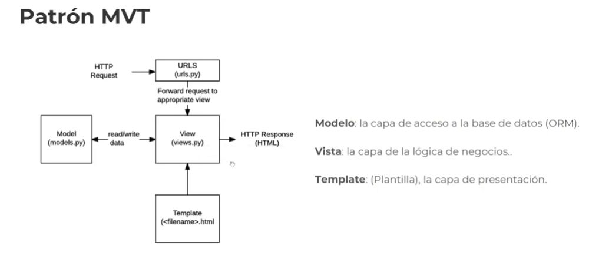

Desarrollo Django
1. ¿Qué es Django?
Django -> Framework de alto nivel, permite crear sitios web seguros y mantenibles.
Para inspiración.. https://djangosites.com/
Relación de 1 a muchos.. 1 -> N
Un categoría -> Muchos productos
2. Patrón MVT
Patrón MVT -> Model View Template
* El controlador pasa a ser la Vista *
Modelo: La capa de Acceso a la base de Datos (ORM)
Vista: La capa de lógica de negocios. -> Es al revés del mvc, la vista es el controlador del Mvc
-
Template: Plantilla, la capa de presentación. -> La vista del mvc, acá es el template.
- El ORM, cada framework tiene el propio.
C# - Entity Framework
Java - Hibernate

3. Estructura de directorios Django
- Django_proyect (Directorio Princiapl)
- Django_proyect (Directorio)
__init__.py (Archivos)
settings.py -> Contiene algunos ajustes de configuración importantes.
* Ajustes/Configuración para este proyecto Django
urls.py - Es posible que deseemos cambiar algunos ajustes predeterminados de vez en cuando.
* Las declaraciones Url para este proyecto Django
Cada url a cada vista va, a que función de Python va.
wsgi.py - Contiene instrucciones sobre a dónde se debe dirigir a los usuarios después de navegar a una determinada URL.
* Un punto de entrada para que los servidores web compatibles con WSGI puedan servir su proyecot.
asgi.py
* Un punto de entrada para que los servidores web compatibles con ASGI puedan servir su proyecot.
(Archivos)
* El más "polenta".. El más importante. Tiene todos los scripts.
- manage.py - Lo usamos para ejecutar comandos en nuestra terminal.
- No tendremos que editarlo, pero lo usaremos con frecuencia.
* Una utilidad de la linea de comandos que le permite interactuar con este proyecto Django de diferentes maneras.
- Apps (Directorio) -> Agrupación de modulos
app_1 (SubDirectorio)
Migrations (SubDirectorio)
- admin.py
- apps.py
- __init__.py -> Un archivo vacío que le indica a Python que este directorio debería ser considerado como un paquete Python.
- models.py
- tests.py
- views.py
app_2 (SubDirectorio)
app_n (SubDirectorio)
- Templates (Directorio)
- Static (Directorio)
- Media (Directorio)
4. Instalación y configuración
Ahora vamos a instalar los paquetes dentro del entorno virtual.. django_2023
- pip freeze -> Para listar los paquetes
- django-admin startproject wmy_ebsite -> Creamos el proyecto que deseemos.
- cd my_website -> Entramos a proyecto
* Nos crea la estructura del proyecto.
- python manage.py runserver
* Levantamos el proyecto
- pip freeze > requirements.txt -> Para registrar nuestras librerías a un txt
- pip install -r requirements.txt -> Para instalar las librerías desde el txt
* Ahora nos toca crear la aplicación.
- python manage.py startapp "my_app" -> Creamos entonces la app con el nombre que deseemos.
* Ahora dentro de nuestro settings.py en el proyecto general, DEBEMOS REGISTRAR nuestra app
- settings.py
INSTALLED_APPS = [
'django.contrib.admin',
'django.contrib.auth',
'django.contrib.contenttypes',
'django.contrib.sessions',
'django.contrib.messages',
'django.contrib.staticfiles',
'my_app', -> Registramos nuestra App
]
* Ahora lass urls que creemos dentro de nuestra App, las registraremos dentro de nuestra App general.
5. Url dispatcher
Un esquema de URL limpio y elegante es un detalle importante en una aplicación web
de alta calidad. Django te permite diseñar URL como quieras, sin limitaciones.
Usando el path dentro de las urlspatterns = []